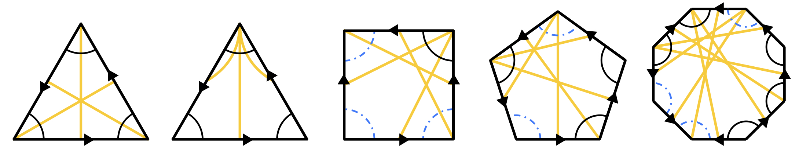
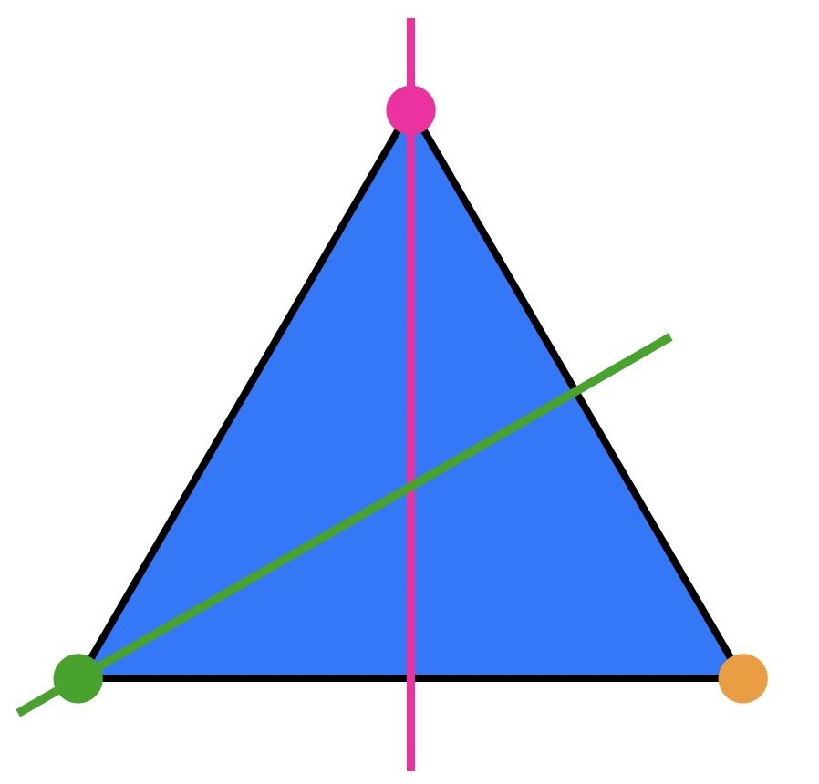
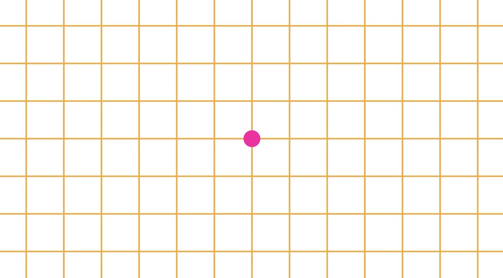
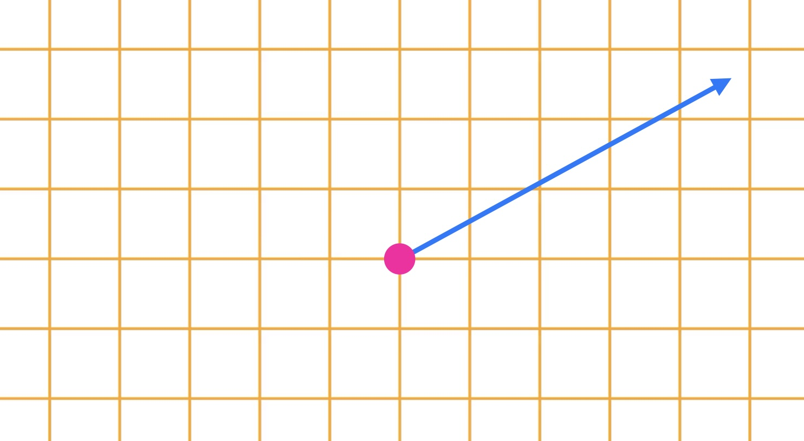
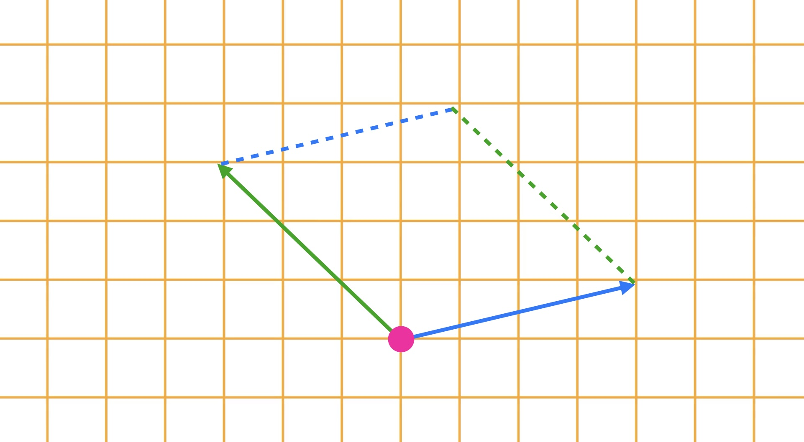
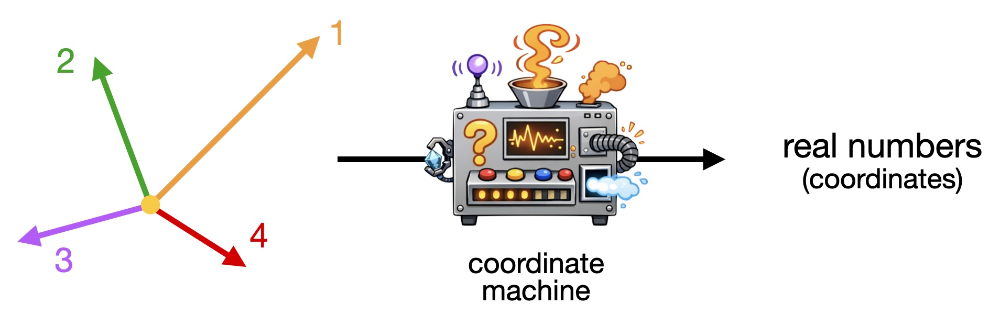
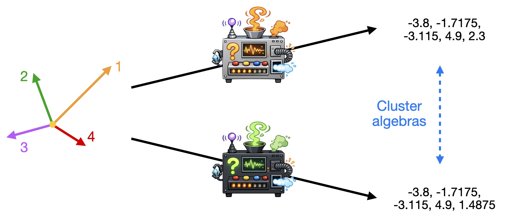

Research

Research articles:
- Noncommutative Polygonal Cluster Algebras, joint with Z. Greenberg, D. Kaufman, A. Wienhard (submitted, arxiv).
Expository articles:
But what is it about?!
Here is a gentle introduction to my research, based on my upcoming defense talk. For a quick mathematical overview, just jump ahead. The title of my thesis is
Let us explore this, starting from the beginning.
What is a group?
You should think of a group as consisting of the symmetries of... something. You can compose them by simply applying one after the other. A basic example is provided by the symmetry group of a triangle, $S_3$. It consists of the identity (the transformation which does nothing), three reflections, and two rotations (by 120° and 240°). All of these can be obtained by repeatedly applying the reflections about the two axes indicated in the picture. The group $S_3$ is discrete, meaning that every transformation is a "jump". You cannot "drive through" the group. If you think about the rotations of a circle on the other hand, the resulting group is continuous. It is usually called $\mathbb{S}^1$ or $\mathrm{SO}(2,\mathbb{R})$.

The group $\mathrm{SL}_2(\mathbb{R})$
Here is a fancier example of a continuous group. Consider $\mathbb{R}^2$, the plane with a specified point $0$:

The elements of $\mathrm{SL}_2(\mathbb{R})$ are the symmetries of this plane which do the following:
- fix $0$,
- do not distort the grid,
- preserve the signed area.
These points should become clear by considering some examples. Pay attention to the way the little squares of the grid are deformed: This preserves their area. Moreover, the word "Hello" is never reflected.
Any transformation in $\mathrm{SL}_2(\mathbb{R})$ can be expressed as a matrix, which records the image of the two standard basis vectors: $$ \mathrm{SL}_2(\mathbb{R})=\left\{ \begin{pmatrix} a & b \\ c & d \end{pmatrix} \,\big|\, ad-bc = 1 \right\}\,. $$ This is read as follows: Such a matrix sends the point $(1,0)$ on the $x$-axis to $(a,c)$, and the point $(0,1)$ on the $y$-axis to $(b,d)$. Since the transformation does not distort the grid, this determines where any other point on the plane is sent. Moreover, the condition $ad-bc =1$ is equivalent to preserving the signed area.
Positivity in $\mathrm{SL}_2(\mathbb{R})$
We call an element $$ g = \begin{pmatrix} a & b \\ c & d \end{pmatrix} $$ of $\mathrm{SL}_2(\mathbb{R})$ totally positive if all the entries are positive numbers.
Note for mathematicians: In general an element of $\mathrm{SL}_n(\mathbb{R})$ is called totally positive if all of its minors are positive. Having positive entries is not sufficient.
But for such an element $g$ of $\mathrm{SL}_2(\mathbb{R})$, we know that the entries satisfy the relation $ad-bc = 1$. Thus, if $a,b,c>0$, we can compute $$ d= \frac{1+bc}{a}\,, $$ and this will also be positive. Therefore, we don't have to consider all the entries to figure out whether $g$ is positive. In the same way, we could consider $b,c$ and $d$, and if they are all positive, we conclude that $a$ is positive. The key takeaway here is that we have two positivity test, which are related by an equation.
Decorated flags
We now switch gears and add some geometry to the picture: A decorated flag (for $\mathrm{SL}_2(\mathbb{R})$) is simply a nonzero vector in $\mathbb{R}^2$. This is the same as a point in the plane which is not our specified point. Mathematicians prefer to draw them as arrows from zero to this point and call them vectors. So, here is an example of a decorated flag (= vector):

Now consider a decorated flag up to the action of $\mathrm{SL}_2(\mathbb{R})$. What does this mean? In everyday life, you can recognize an object from any angle. It is the same object no matter how you see it. Here, we are using the same idea: If you transform the plane using $\mathrm{SL}_2(\mathbb{R})$, we want to consider a decorated flag and its image the same. Repeat this process with any number of decorated flags (for instance 4), and you get a configuration of (4) decorated flags.
But let us go slow. First, we observe that there is only one configuration of 1 decorated flag. Concretely, this means that if I choose a decorated flag, and you choose one, we can find an element of $\mathrm{SL}_2(\mathbb{R})$ which maps my decorated flag to yours. I have visualized this:
To transform the decorated flag given by the long vector (my flag) into the other one, given by the short vector (your flag), we first rotate it onto the $x$-axis. Then we use a squeezing map in $\mathrm{SL}_2(\mathbb{R})$ to adjust the length, and finally we rotate again. Clearly, this procedure can relate any two decorated flags.
Next, let us consider configurations of 2 decorated flags. There is definitely more than one such configuration. This is clear, because $\mathrm{SL}_2(\mathbb{R})$ preserves the signed area. Given a configuration of 2 decorated flags as in the image, you can compute the area of the indicated parallelogram. Here it is important that a configuration is ordered. Thus if the blue vector is the first decorated flag, the signed area is positive. Otherwise, it is negative.

Now, $\mathrm{SL}_2(\mathbb{R})$ cannot transform two configurations of 2 decorated flags into each other if their signed area is different. On the other hand, any two configurations with the same signed area can be transformed into each other. This is visualized in the next animation:
What we have discovered now is that the signed area defines coordinates on the space of 2 decorated flags. In other words, we can compute the signed area for any configuration of 2 decorated flags, and conversely it determines the configuration.
The coordinate machine
Now you might wonder how to describe configurations of 3, 4, 5... decorated flags. This is more complicated but we have a complete picture. Basically one can build (combinatorial) coordinates in the following way:
- choose a collection of pairs of decorated flags,
- compute the signed area for any such pair.
Of course, the question is how to choose the collection in the first step. This is a very interesting question, related to triangulations of polygons but would take us a bit far here. For the sake of this discussion, it is enought to know that such collections exist. Any choice of such a collection gives us a set of coordinates which you can imagine as a little machine like this:

The real numbers which this machine spits out describe each such configuration uniquely. This means that it is possible to draw the configuration if you are given the numbers (and know how the machine works). By choosing different collections, we can build different coordinate machines. Just like in our discussion of positivity for $\mathrm{SL}_2(\mathbb{R})$ it is possible to write down explicit equations to compute one set of coordinate numbers from the other. How to do this exactly is described by the theory of cluster algebras.

In my thesis...
I described a 'bigger' version of this.
- The underlying groups are much bigger than $\mathrm{SL}_2(\mathbb{R})$.
- Flags are not just vectors in the plane.
- Coordinates are not real numbers. In fact, they are noncommutative. You can think about matrices (but that is not exactly what they are).
- The change of coordinates needs completely new methods.
A few mathematical details
The above discussion outlines some aspects of Fock-Goncharov's approach to higher Teichmüller theory for the special case $G=\mathrm{SL}_2(\mathbb{R})$. More general, we have for any split real semisimple Lie group $G$ with decorated flag variety $\mathcal{A}=G/U$ (with $U$ the unipotent radical of a Borel subgroup $B$):
- cluster coordinates on the space of (generic) configurations of $n$ decorated flags, $\mathrm{Conf}_n^\times(\mathcal{A})$,
- the coordinate changes are described by cluster algebras, and
- are consequently positive rational transformations.
All of this allowed Fock and Goncharov to obtain cluster coordinates on a moduli space $\mathscr{A}_{G,S}$ associated to a marked surface $S$. Moreover, they could conclude that this variety has a well-defined positive part, which may be seen as a generalization of Penner's decorated Teichmüller space.
The notion of positivity which comes up in this context is Lusztig's total positivity for split real Lie groups. This has been significantly generalized by Guichard & Wienhard with their new notion of $\Theta$-positivity. The natural question which motivated much of my thesis was:
In my thesis, I considered the groups $G=\mathrm{Spin}(p,q)$, which admit a $\Theta$-positive structure. The main results are:
- The construction of noncommutative cluster coordinates for configurations of decorated flags in the flag variety given by the $\Theta$-positive structure. Some coordinate functions take values in certain Clifford groups, while others are real.
- In joint work with Greenberg, Kaufman and Wienhard: The introduction of the underlying noncommutative cluster algebras, which we call polygonal cluster algebras.
- A concrete description of the coordinate changes, which allow to extend the coordinates to an analogue of Fock-Goncharov's $\mathscr{A}$-space.
- Positivity tests for $G$.